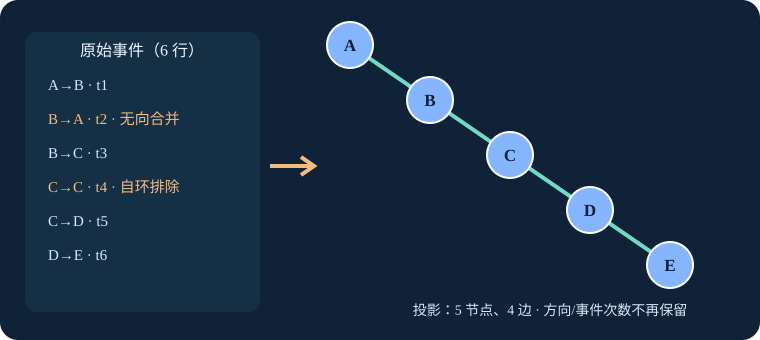

NETWORK DATA / PROVENANCE · PROJECTION · MISSINGNESS
从数据记录到网络边，每一步都是一个需要声明的建模决定。
抓到了六条记录，为什么最后只有四条边？
现实世界不会直接给研究者一张干净的无向简单图。原始来源往往是消息事件、共同参加记录、交易流水或文章引用；一条原始记录是否代表一条图上的边，需要先决定节点身份、边的方向、去重、权重、时间窗口与观察范围。改变这些选择，即使原始数据没变，也会得到不同的图。
本章只使用五个虚构节点 A–E 与六条合成事件演示：A→B 发生一次，B→A 又发生一次，B→C、C→C、C→D、D→E 各发生一次。如果研究的是每一笔有向交互，这六个事件都值得保留；如果研究的是“某段时间里是否存在过不分方向的联系”，则 A↔B 只形成一条边，自环 C→C 可按明确规则排除，最终得到四条边。

采集之前，先定义研究对象与边
一个“社交网络”至少需要一份精确的数据合同：谁可以是节点、什么活动算一次关系、是否允许重边与自环、是否有向、边是否按事件次数加权、观察窗口是如何截断的。举例来说，邮件中的 A 向 B 发消息，不意味着 B 也主动向 A 发消息；把它转换成无向边，会有意丢掉方向信息。
| 字段或规则 | 本章定义 | 需要记录的影响 |
|---|---|---|
| 节点范围 | 已知集合 A–E | 不存在的节点与孤立节点不得混同 |
| 原始事件 | (source, target, timestamp) | 原始行次序和时间戳保留审计 |
| 方向 | 原始有向，教学投影无向 | A→B 与 B→A 合并 |
| 重边 | 无向存在关系仅保留一次 | 事件次数不再代表边权 |
| 自环 | C→C 作为投影规则排除 | 不同研究目标可能保留自环 |
| 时间窗口 | 示例六个事件 | 不能解释为长期稳定合作 |
六条记录的每一步变换都应可回溯
- 采集与授权。只使用获准处理的数据和官方允许的接口，遵守相关访问限制、隐私要求及用途约束，不绕过认证、速率限制或访问控制。
- 验证模式。检查 source、target、时间字段是否完整，时间格式是否一致；保留原始记录以便审计。不要把缺失时间自动补成某个真实发生时间。
- 选择图的投影。本例决定使用无向简单图：每个端点无序对只保留一条边；排除自环。这里得到 4 条边、5 个已知节点。
- 记录规则与损失。明确记录“6 条原始事件、1 条自环事件、1 组反向重复、4 条无向关系”，标注方向和事件频次已经在投影中丢失。
- 检查敏感性。测试缺失某条关键关系后，最大连通分量、平均度、聚集系数会如何变化。不要把单一采集样本直接称为整个真实网络。
小型审计面板：原始行不等于最终边
观察数据处理口径如何改变计数
六条独立的原始交互事件；方向、时间与同一对节点的重复事件均保留。
若完全不观察节点 E，就不能凭“当前图只出现 A–D”推断 E 从未存在。研究发现平均度、社团或中心性发生变化时，必须先排除采样条件发生变化的可能性。
缺失一条边，就足以改变连通性结论
完整的无向投影是 A–B–C–D–E，五个节点全部连通。如果遗漏 C–D 这一条关系，剩余图变成 A–B–C 和 D–E 两个分量，最大连通分量只剩 3/5。研究者如果不知道边缺失，就可能误以为网络自然形成两个互不联系的群体。
上式只在有独立可靠的参考图时可用。对于多数真实网络，我们并不知道真正的边总数，因此不能把“API 成功返回的记录比例”冒充完整性覆盖率。Kossinets 等研究展示了边/节点缺失会影响度、路径、聚集与其他网络统计。
合法可访问不等于可以任意发布
在实际采集中，公开可见的互动、用户名和关系图也可能包含敏感个人信息；简单把真实姓名替换成匿名 ID 并不能保证不可再识别。需要评估合法基础、知情与预期用途、访问控制、保存周期、最小化采集和发布聚合结果的风险。具体合规义务会因地区、数据类型与研究主体而不同。
此处示例故意只使用合成 A–E 数据、无用户画像、无网络请求、无凭证。未经授权的大规模爬取、绕过登录或采集私密联系图，不是本章的复现实验目标。
代码：离线 CSV 审计、去重与缺失边敏感性
运行环境 Python 3.11+、NetworkX 3.3+。只从程序内的合成 CSV 字符串读入，不使用任何在线平台数据。
import csv
from io import StringIO
import networkx as nx
raw = """src,dst,time
A,B,1
B,A,2
B,C,3
C,C,4
C,D,5
D,E,6
"""
rows = list(csv.DictReader(StringIO(raw)))
assert len(rows) == 6
nodes = set("ABCDE")
pairs = set()
excluded_loops = 0
for row in rows:
u, v = row["src"], row["dst"]
assert {u,v} <= nodes and row["time"].isdigit()
if u == v:
excluded_loops += 1
continue
pairs.add(frozenset((u,v)))
g = nx.Graph()
g.add_nodes_from(nodes)
g.add_edges_from(tuple(pair) for pair in pairs)
assert excluded_loops == 1
assert (g.number_of_nodes(), g.number_of_edges()) == (5,4)
assert set(map(frozenset, g.edges())) == pairs
assert nx.is_connected(g)
missing = g.copy()
missing.remove_edge("C","D")
sizes = sorted(len(c) for c in nx.connected_components(missing))
assert sizes == [2,3]
print("raw rows:", len(rows), "projected edges:", len(pairs))这段实验只验证预设清洗规则。采集真实数据还要保留来源文件版本、授权范围、字段字典、时间区域、过滤器以及安全保存与销毁计划。
证据来源与方法原则
- Kossinets (2006), Effects of missing data in social networks。
- Smith & Moody (2013), Structural effects of network sampling coverage I。
- ACM Code of Ethics and Professional Conduct，数据隐私、授权与避免伤害。
- NetworkX Graph，无向简单图的接口约定。
下一章进一步检查结构投影的另一个风险：一个节点如果同时参与两种关系，简单合并成一张图会掩盖多少层间信息？